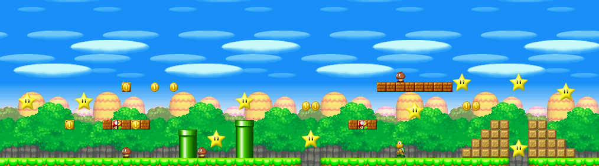
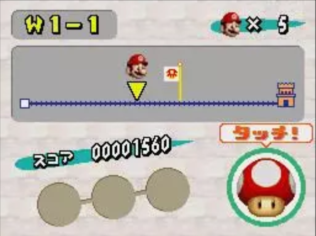

-
GAME & WATCH
De Game & Watch-serie was een lijn die bestond uit 59 handzame, draagbare elektronische lcd-spellen oorspronkelijk ontworpen door Gunpei Yokoi en gefabriceerd door Nintendo van 1980 tot 1991. Zij bevatten elk slechts één spel dat op het lcd-scherm kon worden gespeeld naast een klok en alarmwekker.
Lees meer -


GAMEBOY
De meeste spelcomputers worden waardeloos wanneer er een opvolger verschijnt. Bij een Game Boy was dit niet altijd het geval. De cartridges van de allereerste spellen daterend uit 1989 zijn nog altijd speelbaar op de Nintendo Game Boy Advance. Op de Game Boy Micro echter zijn alleen nog maar Game Boy Advance-spellen te spelen. .
Lees meer -

GAMEBOY ADVANCE
De Game Boy Advance (vaak afgekort met GBA, toen het nog in ontwikkeling was noemde men het Project Atlantis) is een draagbare spelcomputer van Nintendo geïntroduceerd in 2001. De Game Boy Advance is de opvolger van de Game Boy Color. Het was de eerste handheld met een 32 bits-processor. In 2003 werd een vernieuwde versie, de Game Boy Advance SP, op de markt gebracht.
Lees meer -

 NINTENDO DS
De Nintendo DS (NDS) is een draagbare spelcomputer van het Japanse bedrijf Nintendo. De spelcomputer is later opgevolgd door de Nintendo DS Lite. Hoewel de Nintendo DS eerder uitkwam dan de Game Boy Micro, kan deze vanwege de gebruikte technologie toch gezien worden als een nieuwere generatie spelcomputer.
Lees meer -

NINTENDO SWITCH
De Nintendo Switch is een spelcomputer van het Japanse bedrijf Nintendo die wereldwijd is uitgekomen op 3 maart 2017. Het systeem is een hybride tussen een handheld en een home console. Nintendo maakt volgens eigen zeggen duidelijk dat de Switch in eerste instantie is gericht op thuisgebruik.
Lees meer